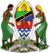

DAR ES SALAAM INSTITUTE OF TECHNOLOGY
DIT-MYUNGA CAMPUS
"An agent of industrialization, a Progressive and Customer-Centered Higher Learning Institution."( DIT-MYUNGA CAMPUS)
Home
About
DIT
Organization Structure
Departments
Civil Egineering Department
Information and Communications Technology
Mission and Vision
Core Values
Roles
Registration Matters
Registration Periods
Registration Fees
Bank Accounts
Online Registration
Courses
Regulations
Publications
Vacancies
Tenders
Newsletter
Guidelines
Contacts
English
Swahili
Home
About
DIT-MYUNGA
Organization Structure
Departments
Civil Egineering Department
Information and Communications Technology
Mission and Vision
Core Values
Roles
Registration Matters
Registration Periods
Registration Fees
Bank Accounts
Online Registration
FAQs
Publications
Vacancies
Tenders
Newsletter
Guidelines
Contacts
Exams Design and Development
RELATED LINKS
MoEST
MoE-Zanzibar
Utumishi
PORALG
National Website